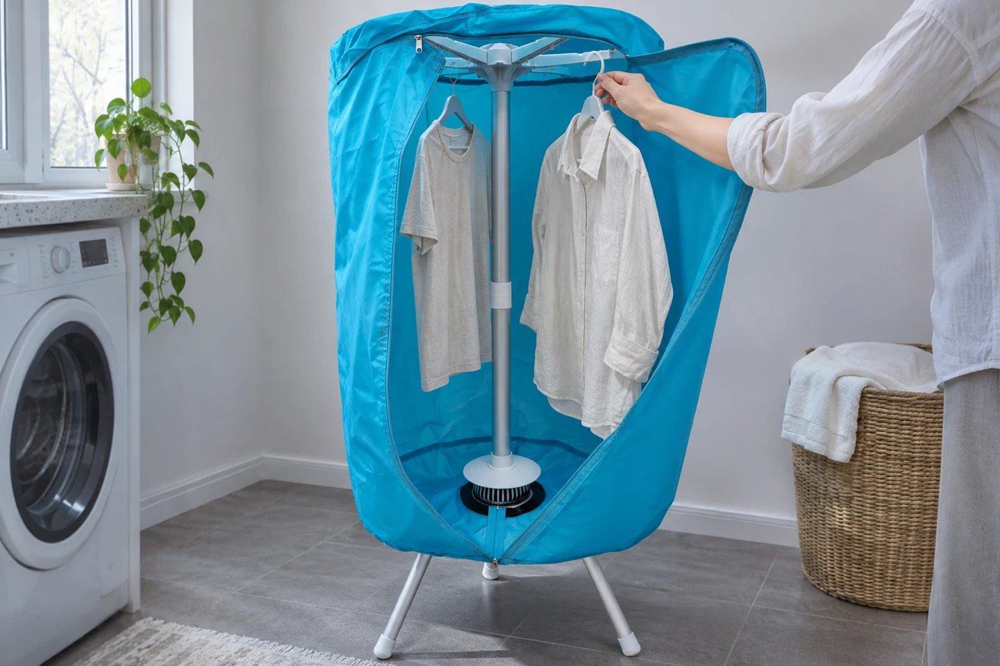
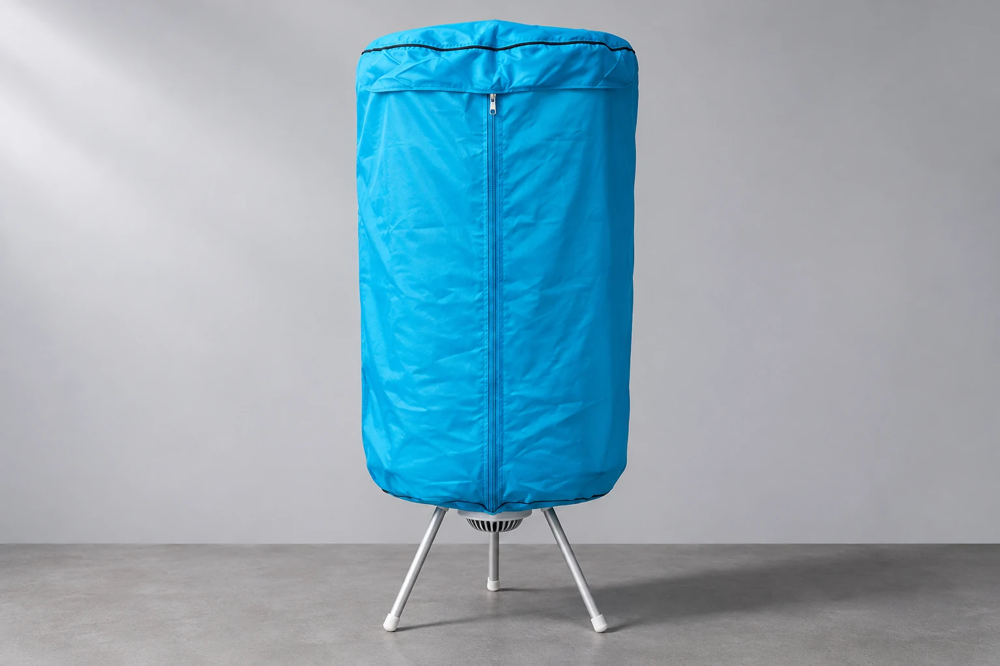

Киім кептіргіш C-PCD-2
Ілгішке іліп кептіру
Қаптың ішінде жылы ауа төменнен ілулі киімге көтеріледі.
- Таймер
- Бұрамалы
- Кептіру тәсілі
- Жылы ауа
- Тіреуіш
- Жиналмалы

Мата қаптың ішінде
Алдыңғы сыдырманы ашқанда ілгіштерге арналған көлденең тіреулер көрінеді.
Киімді іліп кептіру кімге қолайлы?
Жұмысқа киетін жейде мен блузка
Жағасы мен жеңін киімілгіште түзеп, ілгішті жоғарғы кермеге іліңіз. Жылы ауа матаның екі жағынан да өтуі үшін киімдердің арасын ашық қалдырыңыз.
Қалыңдығы әртүрлі мата
Жұқа футболка мен жейденің қалың манжеті қатар кеппеуі мүмкін. Үрлеу уақытын тұтқаны бұрап қоясыз. Алдыңғы сыдырманы ашып, киімді тексеріп, кепкенін шешіп алуға болады.
Кептіруге жеке бөлме жоқ кезде
Кептіргішке розетканың маңынан алдыңғы сыдырмасына еркін жететіндей орын қалдырыңыз. Киімді алған соң тіреуді жинап, орнына қайтадан үтіктеу тақтасын не орындық қоюға болады.
Киімді ілуден таймерге дейін
Киімді ілу
Қапты ашып, киімдерді арасына бос орын қалдырып іліңіз.
Қапты жабу
Сыдырманы жабыңыз. Кептіру кезінде жылы ауа қап ішіне беріледі.
Уақытты таңдау
Үрлеу уақытын қою үшін төменгі бөліктегі тұтқаны бұраңыз.
Қолдану арасында сақтау
Бос тіреуішті бүктеп, келесі кептіруге дейін жинап қоюға болады.

Сипаттамалар
Барлық параметрлер 3
- Кептіру тәсілі
- Жылы ауа
- Таймер
- Бұрамалы
- Құрылымы
- Жиналмалы
Кептіру уақыты неге байланысты?
Киімнің нақты кебуі матаның қалыңдығына, сыққаннан кейінгі ылғалына және киімдердің арасына байланысты.
Қанша киімілгіш ілуге болады?
Киімнің қалыңдығы мен енін ескеріңіз. Екі қалың киім кермеде екі жұқа жейдеге қарағанда көбірек орын алады. Әр киімнің айналасында ауа өтетіндей бос орын қалуы керек.
Ұзын киім қаптың ішіне сыя ма?
Киімді ілгішке іліп өлшеңіз де, ұзындығын жоғарғы кермеден төменгі блокқа дейінгі аралықпен салыстырыңыз. Етек ауа шығатын жерден жоғары еркін салбырап тұруы керек.
Көлденең кептіру керек тоқыма киімге жарай ма?
Киімнің күтім жапсырмасын қараңыз. C-PCD-2-де киім ілулі тұрып, оған жылы ауа беріледі. Көлденең кептіру белгісі болса, киім пішінін тегіс бетте жайып кептіргенде жақсы сақтайды.

Киім кептіргіш
C-PCD-2
[22 990 ₸]
- [Қоймада бар]
- Жеткізу [1–7 күн]
- Кепілдік [12 ай]
Сатушыға сұрақ қою
Мәтінді көшіріп, сатушыға жіберіңіз. Тауар атауы мен моделі енгізілген.